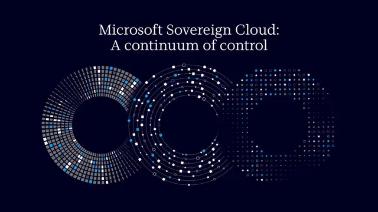

#microsoft
Microsoft、デジタル主権を大幅強化！AI・クラウドの運用管理と技術的独立性を拡張

Microsoftは2026年10月20日、デジタル主権を強化する「Microsoft Sovereign Cloud」の新機能を発表しました。クラウド上のデータ管理から暗号鍵の独立管理、ネットワーク切断時の業務継続、オンプレミスでのAI推論まで、企業や政府機関が重要システムを自ら制御できる環境を拡充します。
記事で取り上げている点
- デジタル主権は「データの所在地」から「運用の支配権」へ
- Azureに統合管理機能と外部暗号鍵管理を導入
- ネットワーク切断環境でもAIと開発基盤を運用
- 企業のAI導入とIT戦略への影響
一次情報（出典） blogs.microsoft.com